What is a computer?¶
Note
“A computer is a machine that can be programmed to automatically carry out sequences of arithmetic or logical operations (computation).” (Wikipedia)
In this session we are going to do a short walk-through of what a computer is, both the hardware parts and the system software.
Everyone has an idea of what a computer is; usually we are thinking of a screen, a keyboard, and internal components like CPU, GPU, HDD/SSH, and RAM/memory.
Computers are special types of machines. Most machines only do one thing (cars, ovens, sewing machines, coffee machines), but computers are what is called “universal machines”. They run programs that means they can do many different tasks.
Hardware parts¶
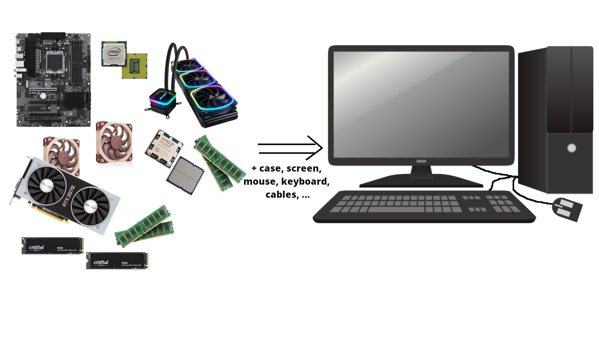
Let us take a look inside a typical desktop computer. This shows a simplified sketch of the inside of the case:
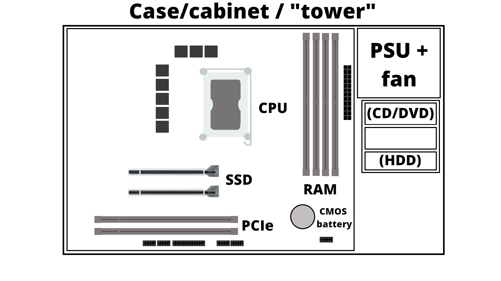
- PSU is the power supply unit.
- CD/DVD are getting increasingly rare
- If you have spinning disk/HDD installed, it sits in a rack along the side and is connected to the motherboard (power cable and data cable). Used for long term storage. Do not confuse with memory!
- A motherboard is mounted in the case, and has a socket for a CPU as well as slots for RAM/memory, SSDs/M.2 disk, PCIe etc.
- How much RAM usually depends on the motherboard, and they should be of the same size (8GB, 16GB, 32GB, etc.) DRAM (Dynamic Random-Access Memory). Memory is a physical device that can be used to store information temporarily - when the computer is shut down the data disappears from the memory. Do NOT confuse with storage space!
- SSD storage are placed in the suitable slots. Size again depends on the motherboard. New SSDs are typically NVMe/M.2, which has better speed usually. Used for long term storage. Do not confuse with memory!
- PCIe are expansion slots, often used for graphics cards/GPUs. These can be large and the case size is important when seeing if there is space for many of the modern types of GPUs.
- The GPU generally has its own cooling, but the CPU needs cooling. Either fans for air cooling or water cooling
- Storage is related to “disks” on the computer. A disk is a storage device that stores and retrieves data using magnetic or optical technology. An SSD or a HDD is an example.
A motherboard¶
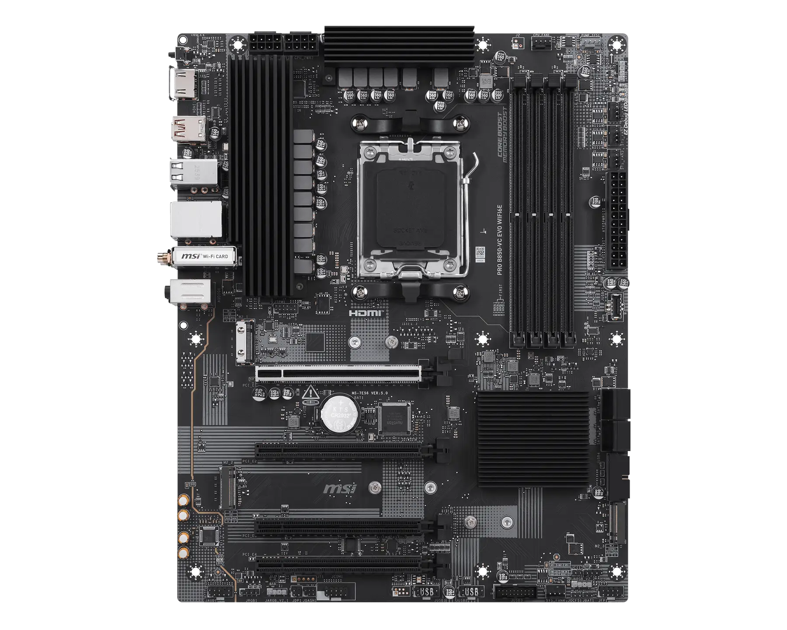
(MSI PRO B850-VC EVO WIFI6E motherboard. Image from https://www.msi.com/Motherboard/PRO-B850-VC-EVO-WIFI6E)
Intel CPU and AMD CPU¶
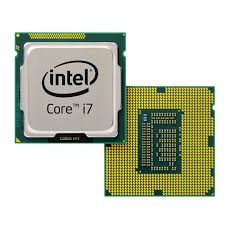
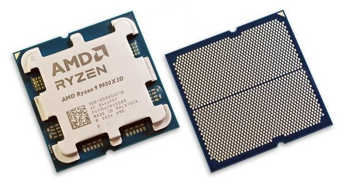
(Images from https://news.softpedia.com/news/Latest-Core-i7-Extreme-Ivy-Bridge-E-Intel-CPU-Delayed-335790.shtml and https://hothardware.com/reviews/amd-ryzen-9-9950x3d-cpu-review)
Memory¶

(Image from https://medium.com/@sunnybabacom10/ram-a-deep-dive-into-its-importance-types-and-functionality-c042a095ef95)
SSD storage¶
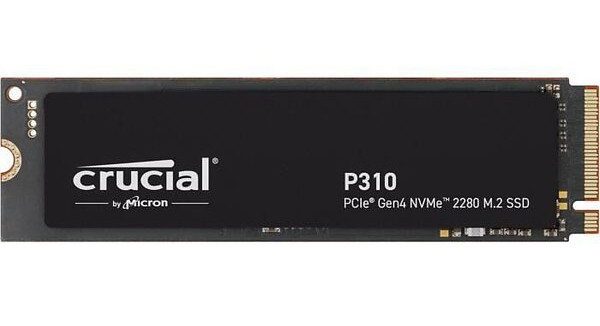
2TB of SSD storage(Image from https://ssd-tester.com/crucial_p310_2tb.html)
GPU¶
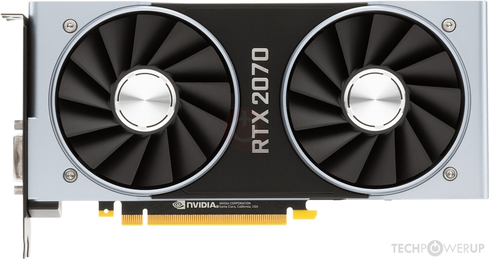
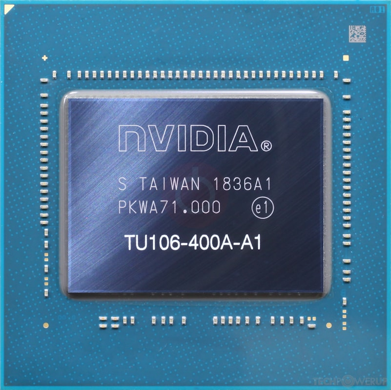
(Images from https://www.techpowerup.com/gpu-specs/geforce-rtx-2070.c3252)
Cooling¶
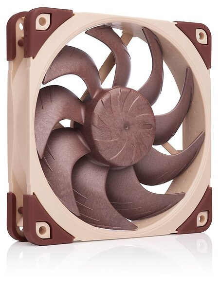
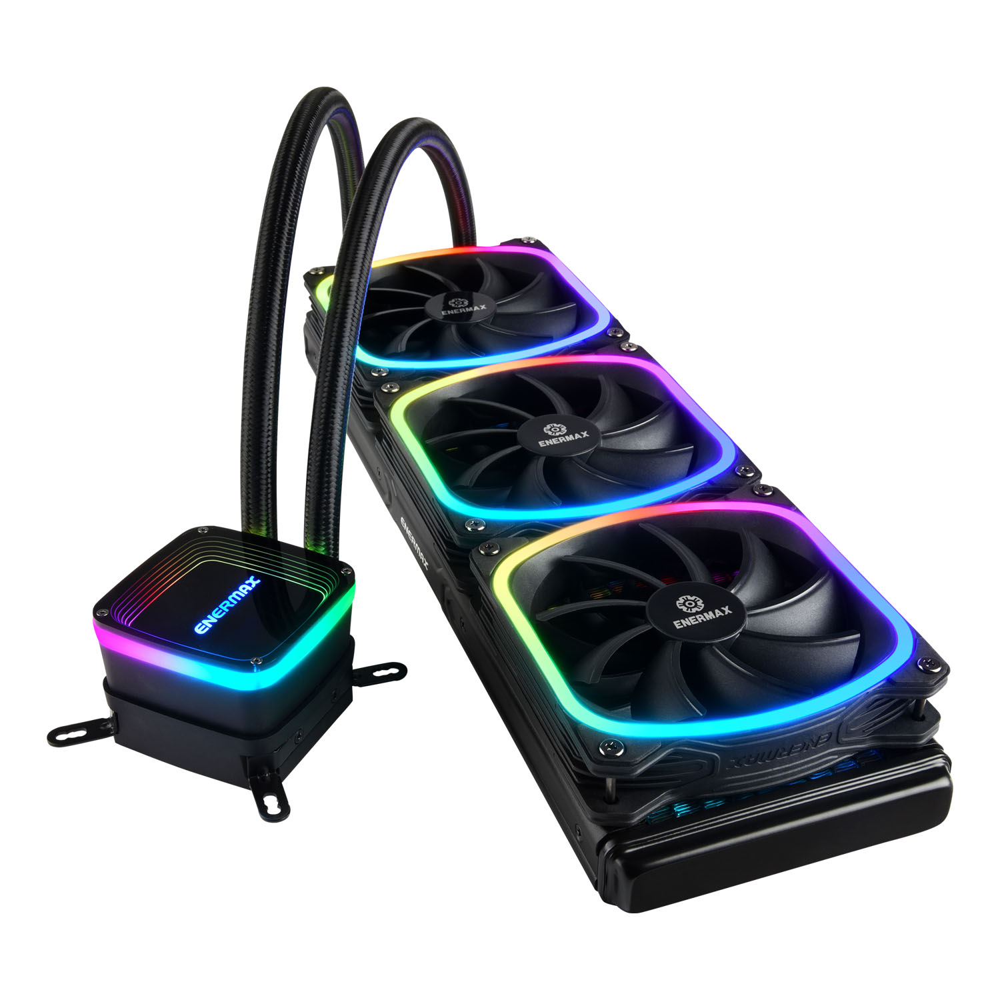
(Images from https://www.noctua.at/en/products/nf-a12x25-pwm and https://www.enermax.com/en/search/label/360mm%20Radiaotr)
System software¶
System software is what is required for the computer to run and to let us interact with it.
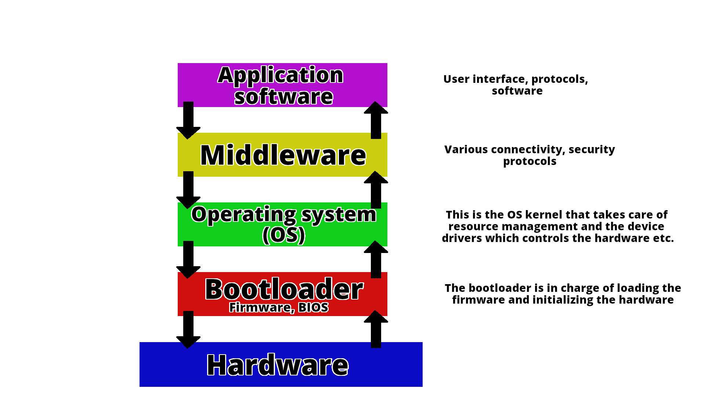
This picture shows how the different components talk together.¶
A computer is a machine that can be programmed to automatically carry out sequences of arithmetic or logical operations (computation). (Wikipedia)
Basic Functions of a Computer¶
Computers are built around four fundamental operations:
- Input – Acquiring data from the outside world (e.g., keyboard, mouse, sensors)
- Processing – Transforming that data through calculations and logical operations
- Storage – Retaining data and instructions for immediate or future use
- Output – Delivering results to the user or to other systems (e.g., monitor, printer)
The Von Neumann Architecture¶
John von Neumann proposed a model for a computer architecture Von Neumann architecture (see Von Neumann Report in the references) where the program and data were loaded to the machine without the need of modifying the hardware. In this case, the same machine could be used to execute any program compatible with the instructions of the machine.
The Von Neumann model organizes a computer into four main components, all communicating over a shared bus:
- Central Processing Unit (CPU) — the active core of the machine; fetches instructions from memory, decodes them, and carries out their execution. Internally, it contains the ALU, the Control Unit, and a set of registers (each described in detail below).
- Memory Unit — a single, unified address space holding both the program instructions and the data those instructions operate on.
- Input/Output (I/O) — the mechanisms through which the computer exchanges information with the outside world, receiving input and delivering output.
- Bus — the shared communication pathway interconnecting all components, carrying addresses, data, and control signals.
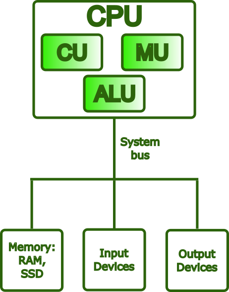
The Von Neumann Bottleneck¶
In the Von Neumann architecture, the transfer of instructions between the CPU and memory and the transfer of data occur through the same bus, and these operations take place one at a time. This creates the so-called Von Neumann bottleneck. Early computers masked this bottleneck because CPU and memory speeds were similar. However, in modern computers, CPU speeds greatly outperform memory transfer rates, making the bottleneck significant, especially in high-performance computing clusters where massive computations are performed.
Modern hardware addresses this problem through several complementary strategies:
- Cache hierarchies (L1/L2/L3) — multiple levels of small, fast memory placed close to the CPU reduce how often the processor needs to reach out to main memory over the bus.
- Harvard-style L1 caches — the first cache level is split into separate instruction and data caches, allowing both to be accessed simultaneously and eliminating a key source of contention.
- Wide memory buses, DDR channels, and HBM (High Bandwidth Memory) — these increase the raw throughput of data transfers between memory and the CPU, attacking the bottleneck at its source.
- Hardware prefetching — dedicated units predict which data the CPU will need next and load it into cache ahead of time, hiding memory latency before it stalls execution.
Despite these improvements, the memory wall remains a major challenge in modern computer architecture, especially in HPC systems, where data movement often dominates execution time.
Neuromorphic computing¶
Neuromorphic computing is a computing paradigm inspired by the organization and behavior of biological neural networks, such as the human brain. Unlike the Von Neumann architecture, where processing and memory are separated and data must constantly move between them, neuromorphic systems integrate computation and memory within large networks of artificial neurons and synapses. This design reduces the Von Neumann bottleneck and enables highly energy-efficient, event-driven operation: artificial neurons activate only when relevant signals arrive instead of continuously executing instructions on a fixed clock cycle.
Examples of neuromorphic hardware include Intel Loihi and IBM TrueNorth. Traditional von Neumann systems remain superior for general-purpose and sequential computing, supported by mature software ecosystems. However, neuromorphic architectures are especially promising for low-power tasks such as sensory processing, pattern recognition, and real-time edge inference, where conventional clock-driven computing is often inefficient.
What Is a CPU?¶
The Central Processing Unit (CPU) is the component of a computer that executes programs. Instructions are fetched from memory, interpreted in machine language, and then executed. These operations occur rapidly, many millions of times per second.
Main Components of a CPU¶
Control Unit (CU)¶
The Control Unit, as its name suggests, manages the operation of the entire processor. It fetches each instruction from memory in sequence, interprets the required operation, and issues the control signals needed to coordinate the ALU, registers, and other components accordingly.
Arithmetic Logic Unit (ALU)¶
The ALU is the part of the CPU that performs computational tasks. This includes arithmetic operations (addition, subtraction, multiplication, and division) and logical operations (comparisons such as equality or greater than, and bitwise operations such as AND, OR, and NOT).
Registers¶
Registers are the closest storage locations in the memory hierarchy to the processor. They are small, extremely fast, and can be accessed in less than one CPU cycle, far faster than external memory. Their role is to hold the values the CPU is actively using: operands for operations, intermediate results, and critical information about the state of execution.
Common register types include:
- General-purpose registers, hold operands and results for arithmetic and logical operations (e.g.,
rax,rbxon x86-64) - Program Counter (PC), holds the memory address of the next instruction to be fetched; it advances automatically after each fetch
- Stack Pointer (SP), tracks the current top of the call stack, used to manage function calls, local variables, and return addresses
- Flags / Status register, records condition codes produced by the last operation (such as zero, carry, sign, and overflow), which are then used by conditional branch instructions to control program flow
What Is an Instruction?¶
An instruction is the most basic unit of work a CPU can perform. At the lowest level, a program is nothing more than a sequence of such instructions encoded in machine code, binary patterns that the hardware can fetch, decode, and act on directly.
Each instruction contains two essential pieces of information:
- An opcode — a numeric code specifying which operation to perform (e.g., ADD, LOAD, or BRANCH)
- Operands — the inputs to that operation: the registers, memory addresses, or immediate values it should act on
The Instruction Set Architecture (ISA)¶
The ISA defines the complete set of instructions a CPU can execute and serves as the interface between software and hardware. It specifies operations, operand encoding, memory addressing, and processor state management. Any program compiled for a given ISA can run on any CPU that implements it, regardless of its internal design. This distinction between the ISA and the processor’s microarchitecture is a fundamental principle of computer architecture.
The Instruction Pipeline¶
Modern CPUs do not execute instructions one at a time from start to finish. Instead, they use an instruction pipeline, where execution is divided into stages such as fetch, decode, execute, and write-back. Multiple instructions can then be processed simultaneously at different stages, increasing throughput without making individual stages faster.
Common ISAs¶
x86-64 (also called AMD64 or Intel 64) is the dominant ISA for desktops, laptops, and servers. It evolved from Intel’s 8086 through 32-bit x86 before AMD introduced the 64-bit extension in 2003. As a CISC architecture, it uses complex instructions that modern CPUs internally translate into simpler micro-operations for efficient pipelined execution.
AArch64 (ARM64) is the 64-bit ARM ISA introduced with ARMv8 in 2011. ARM follows a RISC design, using a smaller and more uniform instruction set that improves pipelining and power efficiency. This made it dominant in mobile and embedded systems, and it is now expanding into laptops, cloud servers, and HPC systems such as the Fugaku supercomputer.
RISC-V is an open, royalty-free ISA introduced at University of California, Berkeley in 2010. Based on RISC principles, it uses a small base ISA that can be extended with standardized modules for features such as floating-point and vector operations. Its openness and flexibility have made it increasingly popular in research, embedded systems, AI processors, and HPC accelerators.
Other notable ISAs include POWER (IBM’s architecture, used in high-end servers and HPC systems like Summit), SPARC (historically significant in scientific workstations, now largely retired), and IA-64/Itanium (Intel’s discontinued VLIW architecture). GPU ISAs form a separate category: NVIDIA uses PTX/SASS for CUDA workloads, while AMD uses RDNA/CDNA for its GPU lines.
What Are CPU Cores?¶
A core is a complete, independent processing unit within the CPU. Each core contains its own ALU, Control Unit, registers, and private L1/L2 cache, and is capable of executing an instruction stream without sharing execution resources with other cores.
Today, processors range from a few cores in consumer CPUs to dozens or even hundreds of cores in server and HPC processors. The two main categories are:
- A single-core CPU executes one instruction stream at a time, processing operations sequentially through a single execution unit.
- A multi-core CPU (dual-core, quad-core, many-core, etc.) can execute multiple instruction streams simultaneously, with each core operating independently.
Additional cores can greatly improve throughput, but only if the workload is parallelized. A purely sequential program will use just one core while the others remain idle. To benefit from multi-core systems, tasks must be divided into parallel workloads using programming models such as OpenMP for shared-memory systems or MPI for distributed computing. In HPC, performance depends not only on hardware, but also on software designed to use parallelism effectively.
What Is Cache Memory?¶
CPU cache is a small, high-speed memory located on or near the processor. It stores frequently used data and instructions so the CPU can access them much faster than from main memory (RAM), reducing delays caused by memory access.
Caches are organized in levels, each with a trading size for speed:
| Level | Location | Size (typical) | Bandwidth (typical) |
|---|---|---|---|
| L1 | Inside each core | 32 – 128 KB | ~1,000 – 3,000 GB/s |
| L2 | Inside each core (or nearby) | 256 KB – 4 MB | ~400 – 1,000 GB/s |
| L3 | Shared across all cores | 8 – 64 MB | ~100 – 400 GB/s |
| RAM | On the motherboard | 8 – 512 GB | ~50 – 100 GB/s (DDR5) / up to ~3,000 GB/s (HBM) |
When the CPU requests data, it searches the cache hierarchy in sequence: first L1, then L2, then L3. Only if the data is missing from all cache levels does it access RAM, which is known as a cache miss. This design is effective because programs often reuse the same data and instructions and frequently access nearby memory locations, a behavior called locality of reference.
Cache performance strongly affects overall execution speed. Algorithms that access memory in regular, sequential patterns make efficient use of the cache and can run much faster than those that frequently cause cache misses and force the CPU to wait for data from RAM.
What Is RAM?¶
Random Access Memory (RAM) is the computer’s main working memory, where the operating system, applications, and active data are stored while programs run. Unlike CPU cache, which keeps only immediately needed data close to the processor, RAM contains the larger working set of a program, including its code and data structures.
RAM is much faster than disk storage but slower than cache, and it is volatile, meaning its contents are lost when power is turned off. Cache hierarchies help reduce the performance gap between the CPU and RAM.
Why RAM Matters¶
- More RAM allows the operating system to keep a larger number of programs and active data in memory at the same time.
- When RAM is insufficient, the operating system relies on swap space (disk-based virtual memory), which is much slower and can significantly reduce system responsiveness.
- RAM performance also depends on memory speed (measured in MT/s or MHz) and latency (the delay between requesting data and receiving it), both of which affect how quickly the CPU can access data that is not already in cache.
NUMA — Non-Uniform Memory Access¶
Modern servers and workstations often contain multiple CPU sockets, each with its own cores and a local bank of RAM. This architecture is called NUMA (Non-Uniform Memory Access).
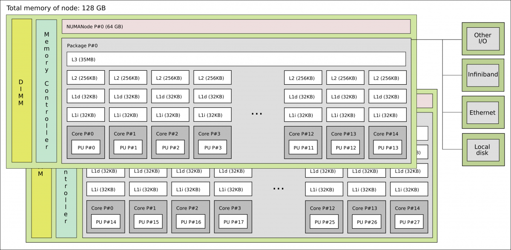
- A core can access its local RAM quickly (low latency).
- Accessing remote RAM (on the other socket) is possible but slower, typically 1.5x to 3x more latency.
In HPC and high-performance workloads, NUMA awareness is critical. Placing data in the same NUMA
node as the cores that process it avoids expensive cross-socket traffic. Tools like numactl,
hwloc, and SLURM’s --mem-bind option help manage NUMA placement on Linux clusters.
How Everything Works Together¶
- Programs and data are first loaded from persistent storage into RAM, making them accessible to the CPU.
- The CPU fetches instructions from RAM or cache, decodes them, and executes them using the ALU and registers.
- The cache hierarchy keeps recently used data close to the processor cores, minimizing delays caused by slower RAM accesses.
- In multi-socket systems, the NUMA topology affects memory access time: accessing local memory is faster than accessing memory attached to another socket.
- Results are then stored back in RAM, written to persistent storage, or sent to output devices.
This fetch-decode-execute-write-back cycle runs continuously and billions of times per second while a program is executing.
Summary¶
| Component | Role |
|---|---|
| CPU | Executes program instructions and controls the overall operation of the computer |
| Cores | Individual processing units inside a CPU that allow multiple tasks to run in parallel |
| Registers | Very small, extremely fast memory locations within each core used for active data |
| Instructions / ISA | The set of operations the CPU can understand and execute |
| Cache (L1/L2/L3) | High-speed memory near the CPU that reduces access to slower RAM |
| RAM | Main volatile memory that stores running programs and active data |
| NUMA | Multi-socket memory architecture where access speed depends on memory locality |
References
- Computer Architecture
- Von Neumann Report
- Computer organization
- Instruction control units
- Registers for instruction
- x86 instruction set
- x86-64 instruction set
- AArch64
- ARM64
- RISC-V instruction set
- Central Processing Unit
- Central Processing Unit cache
- Cache memory
- Cache memory performance
- Random Access Memory
- Non Uniform Access Memory
- NUMA